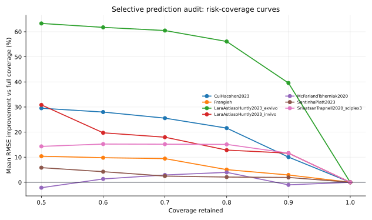
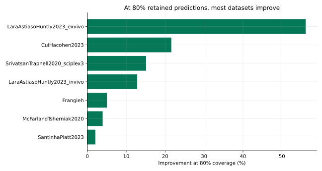
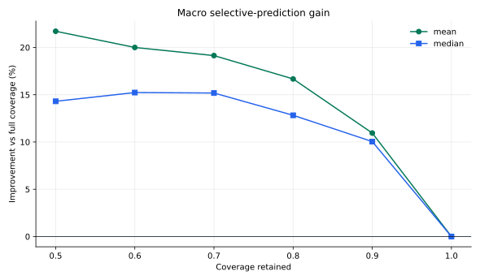

把 SafeConf 从风险相关性推进到 risk-coverage / selective verification。
80% coverage 下，7/7 个数据集平均 RMSE 下降；宏平均 improvement = 16.67%。这支持 selective prediction 方向，但还不是 conformal guarantee。
McFarland 在部分 coverage 下不稳定，需要保留为 failure/boundary case。CCF-A 版本还要补 calibration split 和 risk-control guarantee。



| dataset_name | full_mean_rmse | best_improve_pct | worst_improve_pct | positive_coverage_points | n_coverage_points | improve_at_90pct_coverage | mean_rmse_at_90pct_coverage | improve_at_80pct_coverage | mean_rmse_at_80pct_coverage | improve_at_70pct_coverage | mean_rmse_at_70pct_coverage | improve_at_60pct_coverage | mean_rmse_at_60pct_coverage | improve_at_50pct_coverage | mean_rmse_at_50pct_coverage | selective_prediction_call |
|---|---|---|---|---|---|---|---|---|---|---|---|---|---|---|---|---|
| SantinhaPlatt2023 | 0.378206 | 5.819220 | 0.000000 | 5 | 6 | 1.920346 | 0.370943 | 2.078644 | 0.370344 | 2.466455 | 0.368877 | 4.217991 | 0.362253 | 5.819220 | 0.356197 | selective prediction reduces RMSE at 80% coverage |
| McFarlandTsherniak2020 | 1.540976 | 3.950613 | -2.162896 | 3 | 6 | -1.028301 | 1.556821 | 3.950613 | 1.480098 | 2.916546 | 1.496032 | 1.326404 | 1.520536 | -2.162896 | 1.574305 | selective prediction reduces RMSE at 80% coverage |
| Frangieh | 0.056114 | 10.382798 | 0.000000 | 5 | 6 | 2.902354 | 0.054486 | 5.033196 | 0.053290 | 9.429443 | 0.050823 | 9.788337 | 0.050622 | 10.382798 | 0.050288 | selective prediction reduces RMSE at 80% coverage |
| LaraAstiasoHuntly2023_invivo | 4.889280 | 30.840832 | 0.000000 | 5 | 6 | 11.603794 | 4.321938 | 12.826016 | 4.262181 | 17.964469 | 4.010947 | 19.711357 | 3.925537 | 30.840832 | 3.381386 | selective prediction reduces RMSE at 80% coverage |
| SrivatsanTrapnell2020_sciplex3 | 0.058143 | 15.231384 | 0.000000 | 5 | 6 | 11.613655 | 0.051390 | 15.102695 | 0.049362 | 15.181472 | 0.049316 | 15.231384 | 0.049287 | 14.306947 | 0.049825 | selective prediction reduces RMSE at 80% coverage |
| CuiHacohen2023 | 0.211044 | 29.508864 | 0.000000 | 5 | 6 | 10.043249 | 0.189849 | 21.588637 | 0.165483 | 25.557951 | 0.157106 | 27.988098 | 0.151977 | 29.508864 | 0.148768 | selective prediction reduces RMSE at 80% coverage |
| LaraAstiasoHuntly2023_exvivo | 1.235042 | 63.309859 | 0.000000 | 5 | 6 | 39.567708 | 0.746364 | 56.119896 | 0.541938 | 60.481407 | 0.488071 | 61.748448 | 0.472423 | 63.309859 | 0.453139 | selective prediction reduces RMSE at 80% coverage |